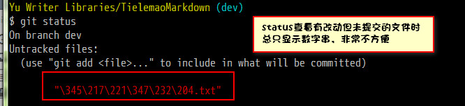
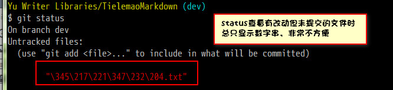

解决git status不能显示中文
现象
status查看有改动但未提交的文件时总只显示数字串，显示不出中文文件名，非常不方便。如下图：
原因
在默认设置下，中文文件名在工作区状态输出，中文名不能正确显示，而是显示为八进制的字符编码。解决办法
将 git 配置文件core.quotepath项设置为falsescript 1
git config —global core.quotepath false
现象
status查看有改动但未提交的文件时总只显示数字串，显示不出中文文件名，非常不方便。如下图：

原因
在默认设置下，中文文件名在工作区状态输出，中文名不能正确显示，而是显示为八进制的字符编码。
解决办法
将 git 配置文件 core.quotepath 项设置为 false
1 | git config —global core.quotepath false |